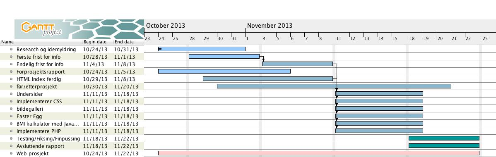

Om vår side; Hva er TTFS?
Vårt prosjekt skal omhandle det å få og opprettholde en sunn livsstil som student med begrenset tid, og budsjett. Selv om siden i hovedsak er rettet mot denne gruppen, ønsker vi at informasjonen også være nyttig for alle som ønsker å besøke siden vår – fra 16 år og oppover. Ettersom målgruppen vår er studenter, så har vi satt navnet til å være TTFS - Trenings-Tips For Studenter.
"Use cases" - Hva kan brukeren gjøre på vår side TTFS:
Listen over “use cases” vil også virke som prosjektets back log i henhold til en agile-arbeidsmetode. Bruker vil finne info underlagt flere hovedtemaer med ulike undersider. De forskjellige oppgavene legges inn i back logg i prioritert rekkefølge. Større use case brytes ned i mindre oppgaver.
Undersidene, Temaer og funksjoner vi har tenkt oss er:
- Kosthold:
- Her vil vi gi tips til sunt kosthold i sammenheng med trening og utenom samt oppskrifter med bilder.
- Intervju og informasjon om Personlige Trenere:
- Vi skal utføre intervjuer med PTer;
Spørsmål:
- Hva er din treningsfilosofi?
- Hva er det som motiverer deg, og har du noen tips til å finne motivasjon på tunge dager?
- Hva er det viktig å ha høy fokus på ved trening?
- Hvor mange økter burde man ha per uke for å se resultater?
- Hva er dine fem favoritt øvelser?
- Hva slags trening uttenfor treningssenter vil du anbefale?
- Hvis du skal anbefale kosttilskudd, hva vil det være?
- Kunne du fortalt oss din favoritt middag, som du føler er noe du kunne anbefalt til et treningskosthold?
- Langdistanse eller intervalltrening?
- I tillegg vil brukeren finne informasjon, og evt link til hjemmeside, for hver enkelt PT som har vært med på intervjuet.
- Før og Etter prosjekt
- Christopher og Ida utfører et 'før og etterprosjekt' der de gjennomfører et program med kosthold og trening. Dato for endelig innhenting av informasjon som skal befinne seg på siden er satt til 2. November, men dette prosjektet blir utført underveis. Materialet fra dette prosjektet blir generert i dagbokform, men bilder og tekst.
- Generell info
- Henviser til linker hvor man kan få mer info (pt sider, treningssentre, brukerundersøkelser, antidoping osv.).
- Kontakt info
- Hvordan få kontakt med utviklerne av siden.
- BMI-kalkulator
- Bruker vil kunne finne en BMI kalkulator på siden
- Easter-Egg!
- Hemmelig!
Grensesnitt
Vi har tenkt at TTFS skal hovedsaklig være en side som gir info til brukeren. Vi ønsker at siden skal være bygget opp veldig enkelt, med friske farger som virker innbydende. I headeren vår, så vil vi ha en logo med navnet på siden - TTFS - og under dette vil det være en navigering til undersidene våre.
Vi ønsker at siden skal være bygget opp veldig enkelt, med friske farger som virker innbydende. I headeren vår, så vil vi ha en logo som vi lager med navnet på siden - TTFS - og under dette vil det være en navigering til undersidene våre.
Førsteutkast for layout

Førsteutkast for logo:

Arbeidsfordeling
- Gruppeleder: Amund Ring
- Møtereferent: Ida Vikaskag Salvesen
Hittil så er det Stine som har stått for å jobbe med logoen vår og Amund for å lage layoutskissen til siden vår. Christopher har kontaktet de personlige trenerne som vi tenker å intervjue, og hans videre oppgave rundt dette vil være videre kontakt med dem og få dette opp på siden. Ida skal sette opp FØR/ETTER prosjektet, og har gått i samarbeid med Elixia treningssenteret, og ordnet gratis trening for gruppemedlemmene som skal utføre prosjektet. Vi sender mail til ulike nettsteder og spør om lov til å bruke materiale fra sidene deres.
Øvrige arbeidsoppgaver vil bli fordelt mellom gruppemedlemmene fortløpende, ettersom de dukker opp. I SCRUM metoden er det gruppemedlemmene selv som velger oppgaver de skal utføre ut fra en prioriteringsliste. Prosjektleders oppgave vil være å se til at oppgavenes prioritering stemmer og at de blir utført til ønskelige tidspunkt.
Milepælsplan - hva skal være ferdig når?
Frist for å ha samlet inn hovedinnholdet til siden er satt til 2. november. Dvs bilder og tekst. Mer informasjon kan legges til underveis men ikke senere enn 9. november. Vår index-side (hoved-HTML) har vi tenkt skal ha samme frist som samling av innholdet, da vi fortløpene vil jobbe med denne, som da og vil gjelde for våre undersider, som fortløpende skal stå ferdig, men endelig frist er også her 9. november.
Når innholdet er ferdig innen 9. november starter vi å jobbe med CSS og å jobbe videre med endelig logo - TTFS, som vi skal ha ferdig innen 18. november. Videre vil vi starte med den avsluttende rapporten etter fullført HTML og CSS, som har samme frist som innleveringen av selve prosjektet den 24. november.
Vi har tegnet et Gannt-diagram for å få en førstegangs-oversikt over oppgaver og milepæler for vårt prosjekt. Videre velger vi likevel å bruke internettjenesten Trello til å organisere arbeidet. Vi føler Trello er svært tilgjengelig og dynamisk. Mer om Trello og hvorfor vi har valgt denne siden under 'Arbeidsmetoder'.
Teknologier
HTML - vi legger vekt på at websiden skal være lesbar og oversiktlig selv når CSS ikke er aktivert. Websiden skal validere som HTML5 og se bra ut i Lynx.
CSS - Dette bruker vi også da det er krav i prosjektoppgaven.
PHP - Dette bruker vi for å kunne ha en fast ramme på siden, slik at vi kun endrer selve innholdet innenfor denne rammen for hver enkel underside, ved "include", "page="-variabler. Vi diskuterte også å bruke PHP for å lage et innloggings område for bruker, men besluttet av vi heller vi legge hovedfokus på HTML og CSS.
Javascript/JQuery - Dette bruker vi i sammenheng med vårt Easteregg, og til BMI-kalkulatoren.
Arbeidsmetode - hvordan vil vi jobbe
Etter å ha funnet litt info om ulike agile arbeidsmetoder har vi valgt å bruke ulike aspekter fra forskjellige fremgangsmåter; SCRUM: Vi bruker scrum metoden for å få en god oversikt over ulike oppgaver som skal utføres til gitte tidspunkt. Vi setter milepæler som vil gi oss gode indikasjoner underveis om prosjektet er i rute. Ulike oppgaver utføres et eller flere gruppemedlemmer. Vi har valgt en gruppeleder, Amund. Vi har faste møtetider: tirsdag og torsdag 11.30 pluss et møte i helgen viss tidspunkt settes hver torsdag. Ida skriver referat fra hvert møte. Referatet fra sist møte leses opp på starten av det neste - hva har blitt gjort fra sist, har det dukket opp ideer/problemer/løsninger siden sist? Backlog? Use case? Mer fra Agile Arbeidsmetoder? Prototyping? RAD? Sluttfase? Vi har valgt å benytte oss av Trello.com, da denne gir en god oversikt, og er enkel å bruke. Det er også fint at den ikke har noe behov for installering av programvare. Sammen med denne så vil vi bruke Github, da den gir en grei og enkel tilgang for alle til de felles filene vi lager og gir oss en oversiktlig historikk på hva vi gjør under prosjektet.